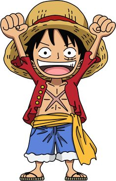

One Piece
| Nom du manga | Volumes | Description du volume | Année publication |
|---|---|---|---|
| Le trésor du roi des pirates | Vol. 1 | Un jeune garçon rêveur et déterminé qui aspire à devenir le Roi des Pirates | 1997 |
| Le sabreur, Roronoa Zoro | Vol. 2 | Luffy et Zoro rencontrent Usopp, un jeune menteur et tireur d'élite | 1998 |
| Le bateau et le pirate | Vol. 3 | Ce volume met en lumière les premières grandes étapes de leur aventure | 1998 |
| La décision de Nami | Vol. 4 | Nami, qui se joint à eux comme navigatrice, révèle enfin son histoire et ses véritables intentions | 1998 |
Informations détaillées sur Onepiece
One Piece se déroule dans un monde composé de mers, îles et archipels, où des pirates parcourent les océans à la recherche de trésors et de gloire. L’histoire suit Monkey D. Luffy, un jeune garçon qui rêve de devenir Roi des Pirates. Son objectif est de trouver le One Piece, un trésor légendaire qui aurait été laissé par le Roi des Pirates, Gol D. Roger, et qui se trouve quelque part sur une île mystérieuse connue sous le nom de Raftel (ou Laugh Tale). Luffy acquiert ses pouvoirs grâce au Fruit du Démon appelé Gomu Gomu no Mi, qui transforme son corps en caoutchouc. Il forme une équipe, appelée les Chapeaux de Paille, composée de personnes ayant leurs propres rêves et ambitions. Ensemble, ils voyagent à travers différentes îles, affrontent des ennemis puissants et découvrent des secrets cachés sur l'histoire du monde.
Le Synopsis
One Piece suit l’aventure de Monkey D. Luffy, un jeune garçon qui rêve de devenir Roi des Pirates. Depuis son enfance, Luffy a été inspiré par Gol D. Roger, le légendaire pirate qui a laissé un trésor immense appelé One Piece avant sa mort. Ce trésor, caché quelque part dans le monde, est la clé pour devenir le plus grand pirate de tous les temps. Luffy acquiert des pouvoirs uniques après avoir mangé un Fruit du Démon, le Gomu Gomu no Mi, qui transforme son corps en caoutchouc. Avec son rêve en tête, il se lance dans une aventure épique pour trouver le One Piece et devenir le Roi des Pirates. Cependant, il ne part pas seul dans cette quête. Tout au long de son voyage, il forme un équipage de pirates, les Chapeaux de Paille, composé de personnages ayant leurs propres rêves et aspirations.Ensemble, Luffy et ses amis traversent le Grand Line, une mer légendaire remplie de dangers, d'îles mystérieuses, et de nombreux ennemis puissants, dont les membres de l’Armée du Gouvernement Mondial, des Shichibukai (pirates alliés du gouvernement), et des Empereurs des mers. Leur aventure est aussi marquée par des alliances et des confrontations avec d'autres pirates, des révolutionnaires, et des peuples opprimés.
Les personnages principaux
- Monkey D. Luffy : Trouver le One Piece et devenir le Roi des Pirates.
- Roronoa Zoro : Devenir le meilleur épéiste du monde en battant Dracule Mihawk, l'actuel meilleur épéiste.
- Nami : Cartographier l'ensemble du monde et découvrir la véritable carte des océans.
- Usopp : Devenir un grand guerrier de la mer, capable de vivre de grandes aventures et d'affronter de puissants ennemis.
- Sanji : Trouver l'All Blue et devenir le meilleur cuisinier du monde.
- Tony Tony Chopper : Devenir un grand médecin capable de guérir toutes les maladies et trouver un remède à toute douleur.